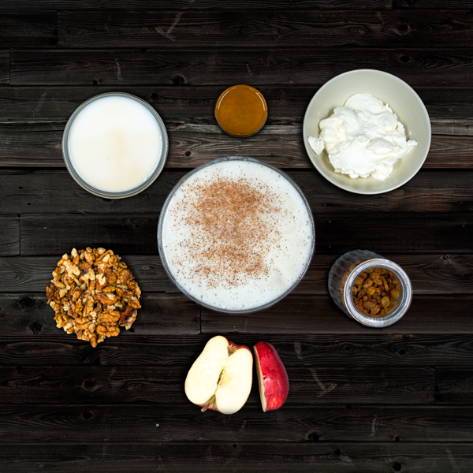

| Ντάκος |
|
| Λάχανο-μαρούλι | |
| Αγγουροσαλάτα | |
| Τζατζίκι | |
| Σαλάτα με χαλούμι και ρόδι |
| Φακές |  |
| Φασολάδα |  |
| Αρακάς με πατάτες |  |
| Noodles με λαχανικά στο τηγάνι | |
| Κοτόπουλο Yakitori |  |
| Κοτόσουπα |  |
| Γιουβαρλάκια |  |
| Ψαροκροκέτες |  |
| Τσιπούρες |  |
| Κοτόπουλο μανέστρα | 
|
| Μακαρόνια με Κοτόπουλο a la creme |  |
| Μοσχαράκι μανέστρα |  |
| Τηγανιτά αυγά |  |
| Πιπεριά-τυρί-ντομάτα |  |
| Ριζότο με μανιτάρια | |
| Γεμιστά | |
| Σπετσοφάι |
| σουβλάκια φρούτων | |
| μπουκίτσες μπανάνα |
 |
| ρολάκια τορτίγιας | |
| Smoothie μήλο-μπανάνα-γάλα | |
| Smoothie μήλο-γιαούρτι-καρύδια-μέλι |  |
| κρέμα σιμιγδάλι | |
| Κέικ |
 |
| crepes |
 |